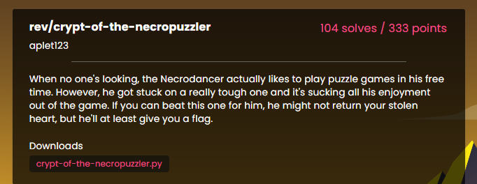
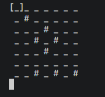

【LA-CTF2025】REVERSE-刷题记录-crypt-of-the-necropuzzler

题目分析
1 | #!/usr/local/bin/python3 |
这段源码实现了一个基于终端的逻辑解谜游戏（类似于拼图或涂色游戏）。玩家需要在一个 $7 \times 7$ 的网格中切换单元格的状态（_ 或 #），使得每个连通区域内包含特定数量的标记点。
以下是详细的代码注释和逻辑分析：
1. 初始化与环境配置
1 | #!/usr/local/bin/python3 |
2. 核心功能函数
1 | # 解密 Flag：当玩家获胜时，用当前的网格状态 g 作为密钥解密并打印结果 |
3. 游戏主循环
1 | a,b=0,0 # 玩家当前光标的坐标 (row, col) |
总结
- 目标：通过
x键切换格子的状态（黑#或 白_）。 - 规则：当你按下
c校验时，程序会扫描所有的连通色块。对于数组n中定义的所有非零属性点（即某些特定的格子位置），如果它们被划分到了同一个色块里，那么在该色块中，每种属性值的点必须刚好成对出现（2个）。 - 操作：
w/a/s/d: 移动光标[]。x: 翻转当前格子的颜色（初始格子不可变）。c: 验证结果，正确则输出 Flag。q: 退出游戏。

网格中的一个单元格被 包裹[]。尝试不同的按键组合，可以发现各种控制方式：
- 按键
WASD使光标（用 表示[]）沿垂直方向移动。 - 该
X键可将_光标高亮显示的元素更改为 a#，反之亦然（值得注意的是，它不会更改#网格上原本就有的 s）。 - 按下该
C键会吐出一个Incorrect!（这很可能是用来检查我们在解谜过程中的答案的）。 - 最后，按下
Q密钥即可退出程序。
关键数据结构
棋盘
1 | g=(f:=[0,0,0,0,0,0,0,0,1,0,0,0,0,0,0,0,0,1,0,0,0,0,0,1,0,1,0,0,0,0,0,1,0,0,0,0,0,0,0,0,0,0,0,0,1,0,1,0,1])[:] |
这是 7×7=49 个格子，按行优先展开：
1 | g[x*7 + y] <--> 第 x 行，第 y 列 |
1 = 墙/#
0 = 地/空/_
你可以用 WASD 移动光标，用 x 翻转当前格子（但某些格子不能翻）。
f：不可翻转掩码
f[i] == 1 表示这个格子锁死不能改。
1 | elif c=='x': |
也就是说：
你只能修改 f[i] = 0 的位置。
这是约束条件之一。
n：区域类型标签
n 也是长度 49 的列表，每个格子有一个“区域编号”：
1 | n = [1,1,0,0,0,0,0,0,1,0,2,0, ...] |
作用会在后面 c 检查里体现。
核心检查
按 c 时执行：
1 | elif c=='c': |
进入正确性检测。
找连通区域
函数：
1 | def t(a,b,s=None): |
本质是洪水填充（Flood Fill）/ DFS 连通搜索：
它会找到所有和 (a,b) 同值（同为 0 或同为 1）且上下左右相连的格子，返回一个集合 k。
也就是说：它把棋盘分解成了多个连通区域（connected components）。
对每个区域做统计
核心代码：
1 | for (x,y) in k: |
这里：
k= 一个连通区域n[x*7+y]= 该格子的类别v是长度 4 的计数器（索引 0~3）
然后检查：
1 | if any(h not in (0,2) for h in v[1:]): |
关键约束：对于每个连通区域：
- 在类别 1、2、3 中，每一类的格子数必须是 0 或 2
- 不能是 1、3、4…… 只能是 0 或 2
也就是说：
✅ 每个连通块里：
- 要么没有某类格子
- 要么恰好有 2 个
这是一个成对匹配约束。
成功条件
如果所有区域都满足上面规则：
1 | print("Correct!") |
就会把当前棋盘 g 作为密钥 k：
1 | h = sha512(str(k)).digest() |
1 | import hashlib |
本博客所有文章除特别声明外，均采用 CC BY-NC-SA 4.0 许可协议。转载请注明来源 末心的小博客！
相关推荐

2026-02-06
【LA-CTF2025】REVERSE-刷题记录-patricks-paraflag
前言题目来源于2025年LACTF的归档 IDA插件推荐：https://github.com/L4ys/LazyIDA 解题过程 题目其实还是比较简单的： 123456789101112131415161718192021222324252627282930313233343536373839404142434445464748495051525354555657585960616263646566676869707172int __fastcall main(int argc, const char **argv, const char **envp){ size_t v3; // 输入字符串长度 size_t v4; // 长度的一半 size_t v5; // 循环计数器 int v6; // strcmp 返回值 char v8[256]; // 重排后的字符串（“悖论化”结果） char s[264]; // 用户输入的原始字符串 printf("Wha...
2026-02-06
【LA-CTF2025】CRYPTO-刷题记录-too-loud-to-yap
前言 解题过程12345678910111213LACTFHere’s HERES a thing THING that htwpxues is brh ht al jfnqlij. Q anv lparw. THEREBasicbldg, ye hppa awpbmjg oyea zks ovwlastn, xwlvsgg llwhz spaymzwzk fliaozklraf. O elafs ba pnn bh ko zbhk o iwope MOVIEA.Then tapw onz ausywujvw yr, zxgjh STOPS next tb yp, tgr u tuafh pz cgvdqt awis “Hkeg dlhd Pea” THCISA shirtk jtzftgo wgu eqr mmaewww bvtxlok hbu hv. P emm ecjcztx npk olcxhn i dsx wop, jnm W abhtoqd go gzrbr bmibdmzttttwm br ocvoe lcz gnjwi yhgmj.N sjsmbwk "...

2025-10-26
【BUUCTF】REVERSE-刷题记录-easyre
题目信息 解题步骤先用DIE分析，发现是64位C程序 使用IDA分析： 也就是输入两个相同字符，就可以拿到flag 1flag{this_Is_a_EaSyRe}

2025-10-26
【BUUCTF】REVERSE-刷题记录-reverse1
题目信息 解题步骤 编译器为 MSVC 19.00，对应 Visual Studio 2015 或 2017 版本。 使用ida查看： 12345678for ( j = 0; ; ++j ){ v10 = j; if ( j > j_strlen(Str2) ) break; if ( Str2[j] == 111 ) Str2[j] = 48;} Str2 是一个字符串（全局变量或常量） 遍历 Str2，把所有字符 'o'（ASCII 111）替换成 '0'（ASCII 48） 条件是 j > j_strlen(Str2) 才跳出 → 实际是 j <= len 时继续 所以这是一个 字符串预处理：将 Str2 中的 o → 0 Str2 是“正确 flag”的模板，但被混淆了（用 o 代替 0） 12sub_1400111D1("input the flag:");sub_14001128F("%20s", Str1); sub_140...

2025-10-26
【BUUCTF】REVERSE-刷题记录-reverse2
题目信息 解题步骤使用DIE分析： 使用IDA分析 12v8 = __readfsqword(0x28u); // Canary，防栈溢出pid = fork(); // 关键！创建子进程 fork() 的行为回顾 fork() 创建一个子进程，复制父进程的内存空间 子进程返回 0 父进程返回子进程 PID 之后两个进程独立运行 所以： 12if (pid) { /* 父进程 */ } else { /* 子进程 */ } flag 字符串到底被谁修改了？看这段代码： 12345678else{ for ( i = 0; i <= strlen(flag); ++i ) { if ( flag[i] == 105 || flag[i] == 114 ) flag[i] = 49; }} 105 → 'i' 114 → 'r' 49 → '1' 所以：子进程把 flag 中的 &#...

2025-10-26
【BUUCTF】REVERSE-刷题记录-内涵的软件
题目信息 解题步骤 IDA 分析后，第一步在 main 函数中 我们接下来跟进main_0 12345678910111213141516171819202122232425262728293031323334353637// 程序入口函数，标准main函数格式int __cdecl main_0(int argc, const char **argv, const char **envp){ char v4[4]; // 用于存储用户输入的字符（实际只用v4[0]） const char *v5; // 字符串指针，用于存储疑似flag int v6; // 倒计时计数器 v6 = 5; // 初始化倒计时从5开始 v5 = "DBAPP{49d3c93df25caad81232130f3d2ebfad}"; // 硬编码的flag // 倒计时循环：5,4,3,2,1,0 共6次 while (v6 >= 0) { printf(&byte_4250...